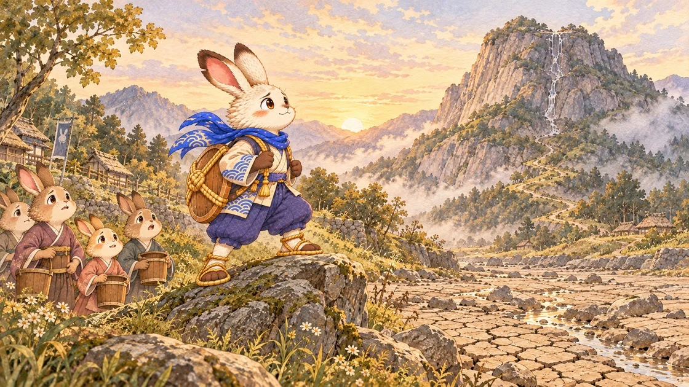
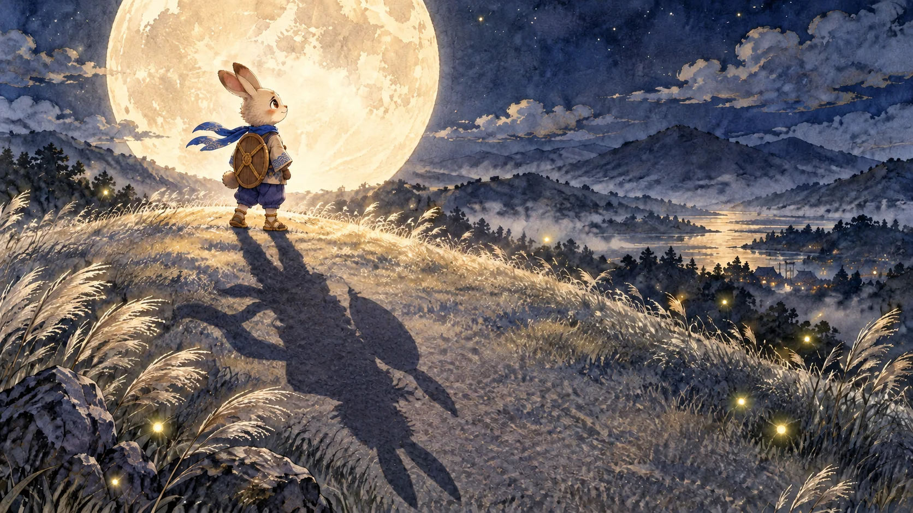
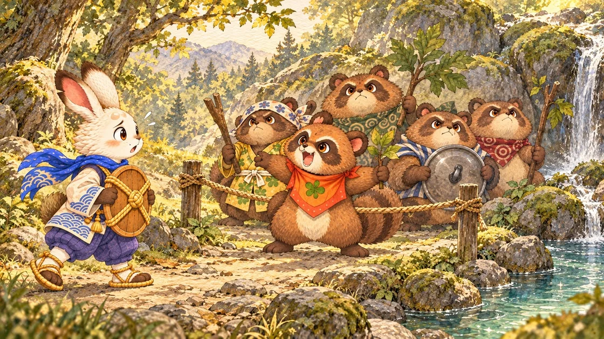
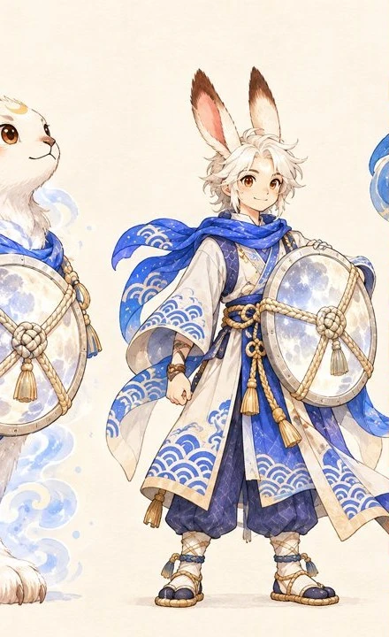
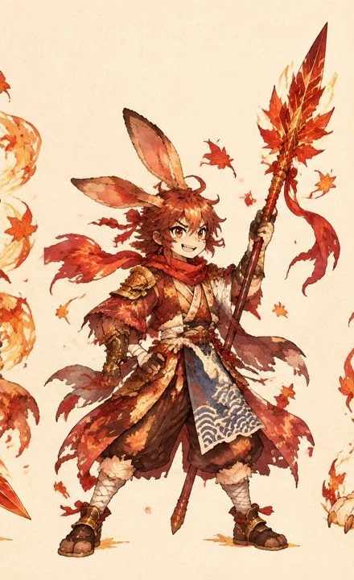
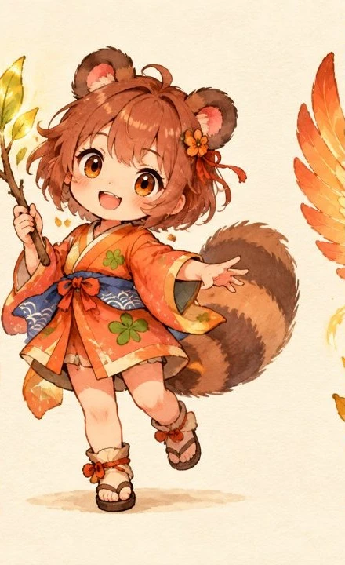
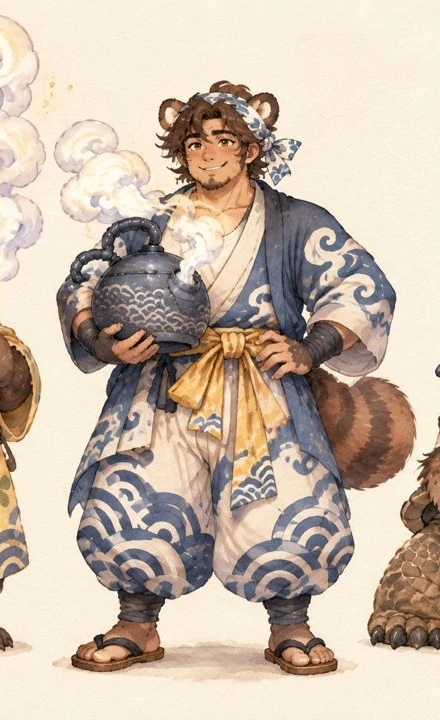
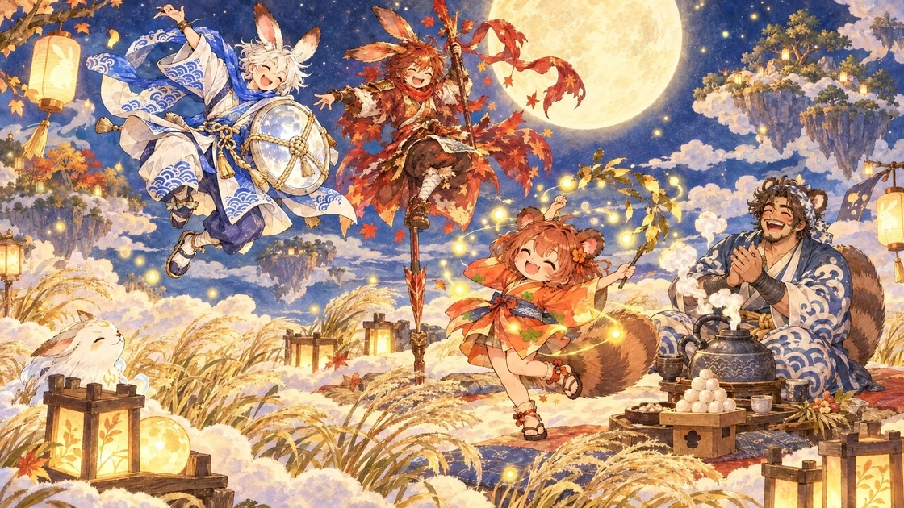
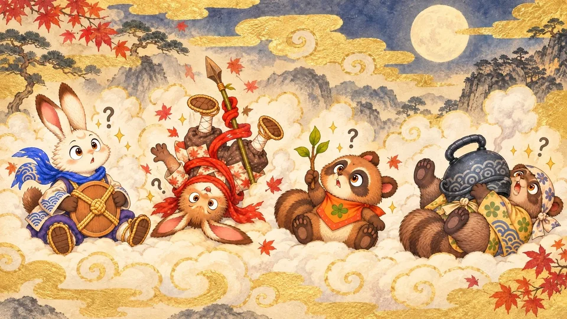

雪丸、水をもとめて。
むかしむかし、山や川、月や森を守る神さまたちがいました。
あるとき神さまたちは、昔の記憶を失い、うさぎやたぬきの姿に。
山の水が細りはじめたある朝、白うさぎの雪丸は、水をもとめて旅に出ます。


むかしむかし、山や川、月や森を守る神さまたちがいました。
あるとき神さまたちは、昔の記憶を失い、うさぎやたぬきの姿に。
山の水が細りはじめたある朝、白うさぎの雪丸は、水をもとめて旅に出ます。

うさぎたちは自動で道を進み、敵に出会うとその場で合戦。戦った相手が心をひらいて、旅の仲間になることも。
負けてもコインと育成は持ち越し。強くなった仲間と、前に負けた場所に再挑戦。育てるうちに、仲間の姿も少しずつ変わっていきます。
仲間たちはみんな、動物の姿になった神さま。奥義の決め手となる一瞬、光の輪郭となった本来の姿が重なります。







24秒の戦闘ショートから、じっくり見られるPVまで。
『うさたぬ合戦』はAVY PROJECTが個人で開発中です。
Android版クローズドベータの予定は、公式の発信をご確認ください。